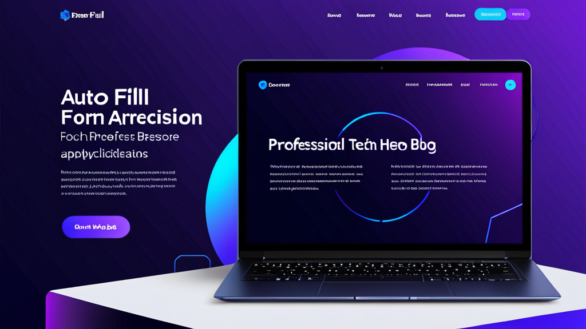

Le Meilleur Remplisseur de Formulaires IA pour les Candidatures : Gagnez du Temps et Réduisez les Erreurs
Si vous avez déjà passé un samedi après-midi à recopier votre parcours professionnel dans la dixième candidature en ligne de la journée, vous connaissez la douleur. Les doigts endoloris, le nom de votre ancien employeur encore mal orthographié. Chaque champ semble être une petite taxe sur votre patience.
Cette saisie de données répétitive n'est pas seulement agaçante — elle vous coûte des opportunités. Des études montrent que 60 % des candidats abandonnent leur candidature en cours de route lorsque les formulaires sont trop longs. La solution n'est pas de taper plus vite, mais de travailler plus intelligemment.
Voici comment le meilleur remplisseur de formulaires IA pour les candidatures peut transformer des heures de travail fastidieux en quelques minutes, et ce qu'il faut rechercher pour bien le choisir.
Pourquoi le Remplissage Automatique Classique ne Suffit Pas pour les Candidatures
Le remplissage automatique du navigateur fonctionne bien pour votre adresse et votre carte de crédit. Mais les candidatures sont d'un tout autre niveau. Elles demandent :
- Plusieurs postes antérieurs avec dates, responsabilités et motifs de départ
- Le parcours scolaire avec moyennes, spécialités et années d'obtention
- Des listes de compétences qui changent selon le poste
- Des questions ouvertes comme « Pourquoi voulez-vous ce poste ? »
Le remplissage automatique standard ne peut pas gérer cela. Il remplit votre nom et votre numéro de téléphone, puis vous laisse face à 15 champs vides. Vous finissez par copier-coller depuis un document Word.
Un remplisseur de formulaires IA résout ce problème différemment. Il ne se contente pas de stocker du texte statique. Il comprend le contexte.
Ce Qui Rend un Remplisseur de Formulaires IA Vraiment Utile
Tous les remplisseurs de formulaires ne se valent pas. Voici ce qui distingue ceux qui sont utiles de ceux que vous désinstallerez au bout d'une semaine.
Remplissage Basé sur un Profil pour les Champs Standards
La fonction de base est simple : vous créez un profil une fois avec votre nom, email, téléphone, adresse et historique professionnel. Lorsque vous arrivez sur une candidature, l'extension reconnaît ces champs et les remplit instantanément. Plus de copier-coller, plus de fautes de frappe.
Cela seul permet d'économiser 5 à 10 minutes par candidature. Si vous postulez à 20 emplois, c'est plus de trois heures de gagnées.
Réponses IA pour les Questions Ouvertes
La vraie magie opère avec les champs de texte. Un bon remplisseur de formulaires IA ne se contente pas de coller un texte générique. Il analyse la question et génère une réponse pertinente.
Par exemple :
- Question : « Décrivez une situation où vous avez résolu un conflit au travail. »
- Réponse IA : Elle puise dans votre expérience enregistrée, la formate en un court paragraphe selon la méthode STAR et l'insère.
Vous pouvez modifier la réponse avant de soumettre, mais le gros du travail est fait.
La Vie Privée Compte Plus Que Vous Ne le Pensez
Lorsque vous remplissez des candidatures, vous partagez des données sensibles : numéro de sécurité sociale (pour les vérifications d'antécédents), adresses, historique professionnel. La dernière chose que vous souhaitez est que ces données soient envoyées vers un serveur cloud que vous ne contrôlez pas.
Le meilleur remplisseur de formulaires IA pour les candidatures traite tout localement. Vos données restent dans votre navigateur. Pas d'envoi, pas de serveur tiers, aucun risque de fuite de données.
Comment Utiliser un Remplisseur de Formulaires IA Efficacement
Tirer le meilleur parti de ces outils nécessite un peu de préparation. Voici un flux de travail qui fonctionne.
Étape 1 : Créez un Profil Complet
Ne bâclez pas cette étape. Prenez 20 minutes pour créer un profil détaillé :
- Nom complet, email, téléphone, adresse
- 2 à 3 postes antérieurs avec noms d'entreprise, dates et 2 à 3 points clés par rôle
- Parcours scolaire avec noms d'établissements, diplômes et années d'obtention
- Une liste de 10 à 15 compétences pertinentes
- Un résumé professionnel court (2 à 3 phrases)
Plus vous ajoutez de détails, meilleures seront les réponses de l'IA.
Étape 2 : Utilisez un Modèle pour les Questions Récurrentes
De nombreuses candidatures posent des questions similaires : « Pourquoi êtes-vous intéressé par ce poste ? » ou « Quelles sont vos prétentions salariales ? » Enregistrez 3 à 4 modèles de réponses dans votre profil. L'IA peut les adapter légèrement en fonction du nom de l'entreprise ou du titre du poste détecté sur la page.
Étape 3 : Relisez Toujours Avant de Soumettre
L'IA est performante, mais pas parfaite. Elle pourrait mal interpréter une question ou générer quelque chose qui sonne un peu faux. Relisez chaque réponse générée par l'IA avant de cliquer sur « Envoyer ». Cela prend 30 secondes par candidature et évite des erreurs embarrassantes.
Étape 4 : Suivez les Candidatures Déjà Envoyées
Certains remplisseurs de formulaires enregistrent les sites sur lesquels vous les avez utilisés. Cela vous évite de postuler à nouveau dans la même entreprise. Si ce n'est pas le cas, tenez un simple tableur.
Au-Delà des Candidatures : Qui D'Autre en Bénéficie
Les chercheurs d'emploi sont le public évident, mais le même outil fonctionne pour d'autres formulaires répétitifs.
Le Personnel Médical
Les formulaires d'admission des patients demandent les mêmes informations à chaque fois : nom, assureur, antécédents médicaux, médicaments actuels. Un remplisseur de formulaires IA peut les renseigner à partir d'un profil enregistré, réduisant le temps d'enregistrement de 10 minutes à 2.
Les Gestionnaires de Sinistres d'Assurance
Les formulaires de déclaration de sinistre sont notoirement répétitifs. Nom du souscripteur, numéro de police, date du sinistre, description des dommages. Un remplisseur de formulaires réduit les erreurs de saisie et accélère le traitement.
Les Freelances et Consultants
Les propositions et contrats nécessitent votre nom, adresse professionnelle, descriptions de services et tarifs. Au lieu de les retaper pour chaque client, laissez l'IA gérer les parties standardisées pendant que vous vous concentrez sur les éléments personnalisés.
Les Recruteurs
Si vous examinez des candidats et remplissez des formulaires d'évaluation, une extension de remplissage automatique peut vous faire gagner du temps sur les champs répétitifs comme le titre du poste, le service et la date d'entretien.
Ce Qu'il Faut Rechercher dans une Extension de Remplissage Automatique pour Chrome
Si vous cherchez un remplisseur de formulaires IA, gardez ces critères à l'esprit.
Traitement Local
Vos données ne doivent jamais quitter votre machine. Recherchez des extensions qui précisent explicitement qu'elles traitent tout dans le navigateur. C'est non négociable pour les informations sensibles.
Profils Personnalisables
Vous avez besoin de plus d'un profil. Peut-être un profil pour les candidatures et un autre pour les propositions freelance. L'extension doit vous permettre de basculer facilement entre eux.
Précision de Détection des Champs
Les meilleures extensions reconnaissent les champs même lorsque les sites utilisent des libellés non standard. « Prénom » doit être rempli, que le site l'appelle « firstName », « fname » ou « given-name ».
Absence d'Autorisations Inutiles
Certains remplisseurs de formulaires demandent l'accès à toutes vos données de navigation. C'est un signal d'alarme. Une bonne extension n'a besoin que d'accéder aux champs de formulaire et à la page sur laquelle vous travaillez activement.
Erreurs Courantes à Éviter
Même avec un excellent outil, vous pouvez vous saboter. Évitez ces pièges.
Trop Compter sur les Réponses IA
L'IA peut rédiger une réponse correcte à « Pourquoi voulez-vous ce poste ? », mais elle ne capturera pas votre enthousiasme sincère ni votre connaissance spécifique de l'entreprise. Utilisez l'IA comme point de départ, puis personnalisez.
Ne Pas Mettre à Jour Votre Profil
Vos compétences évoluent. Votre parcours professionnel change. Si vous ne mettez pas à jour votre profil tous les quelques mois, l'IA générera des réponses obsolètes.
Ignorer le Formatage
Certains portails de candidature suppriment le formatage du texte collé. Si votre réponse IA utilise des puces ou du gras, elle pourrait être illisible après soumission. Restez sur du texte brut pour plus de sécurité.
Comparaison Rapide : Remplisseur de Formulaires IA vs. Saisie Manuelle
| Tâche | Saisie Manuelle | Avec Remplisseur de Formulaires IA |
|---|---|---|
| Infos de base (nom, email) | 30 secondes | 1 seconde |
| Historique professionnel (3 postes) | 5-7 minutes | 30 secondes |
| Questions ouvertes (3 questions) | 10-15 minutes | 2 minutes |
| Relecture et soumission | 2 minutes | 2 minutes |
| Total par candidature | 17-24 minutes | 5 minutes |
Cette différence de 12 à 19 minutes par candidature s'accumule rapidement. Postulez à 50 emplois, et vous aurez économisé 10 à 16 heures.
Pourquoi C'est Encore Plus Important en 2025
Le marché du travail est concurrentiel. Les entreprises utilisent l'IA pour trier les CV et rejeter automatiquement les candidats qui ne correspondent pas aux mots-clés. Plus vite vous soumettez vos candidatures, plus vous pouvez cibler de postes.
Mais la rapidité sans précision ne vaut rien. Un remplisseur de formulaires IA qui fait des erreurs — dates incorrectes, champs mal interprétés — nuira à vos chances. C'est pourquoi il est sage de tester un outil sur quelques candidatures à faible enjeu avant de l'utiliser à grande échelle.
Faire le Bon Choix
Vous n'avez pas besoin de passer des heures à étudier chaque remplisseur de formulaires. Concentrez-vous sur trois choses : la confidentialité, la précision et la facilité de configuration. Si une extension coche ces cases, elle vaut la peine d'être essayée.
Pour les chercheurs d'emploi en particulier, le meilleur remplisseur de formulaires IA pour les candidatures est celui qui gère à la fois les champs standards et les questions ouvertes sans envoyer vos données dans le cloud. Cette combinaison de rapidité et de confidentialité est rare, mais elle existe.
Si vous voulez voir à quoi ressemble une solution bien conçue, jetez un œil à Autofill AI. Elle utilise une IA qui fonctionne entièrement dans votre navigateur — vos données ne touchent jamais un serveur. Vous pouvez remplir les champs standards à partir d'un profil enregistré et générer des réponses aux questions ouvertes via l'IA locale ou votre propre clé API. Elle est conçue exactement pour ce genre de travail répétitif qui vous fait perdre du temps.
Mais quel que soit l'outil que vous choisissez, le principe reste le même : arrêtez de considérer le remplissage de formulaires comme un mal nécessaire. Automatisez les parties ennuyeuses. Économisez votre énergie pour ce qui compte vraiment — comme réussir l'entretien.